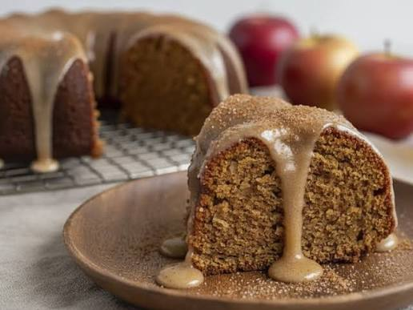

BLOG #1
Bienvenidos al blog de Pasteleria Mil Sabores en este blog queremos dar a contar detalles de nuestra historia y el como se genero todo y causo que quisieramos empezar a trabajar enserio con los pasteles
Nuestra historia
Descubre cómo un pequeño cuaderno de recetas familiares se transformó en la pastelería favorita de tu barrio.
Nuestra historia abarca no tanto pero es inspiradora el como todo se transformo tan rapido en una pasteleria de tanto renombre y queriendo causar felicidades como ya se sabe somos 3 dueños de la pasteleria y todo comenzo con una motivacion de querer hacer realidad lo que escribiamos en nuestros cuadernos dando a presentar nuestros productos solamente a conocidos el cual era solo momentaneo pero con el tiempo todo se convirtio en algo magico y de que en verdad nos propusimos con nuestro sueño de crear esta pasteleria y con perseverancia se logro todo ya que nos esforzamos demasiado tratando de hacer este sueño realidad y mas sabiendo la competencia que hay en este mercado y ya con el tiempo el boca a boca hizo que nuestros productos sonaran mucho mas haciendo que nuestra receta y logros sean mas llamativos para la gente y llenandolos de felicidad en cada momento que logramos darle nuestros productos y ahora con esta pagina buscamos llegar a mas gente que pueda conocer nuestros productos y poder contentarlos en cada dia que les llega algo de nuestros productos y con eso dicho estamos agradecido de la gente que nos apoya y que sepan que todo lo que hacemos es con cariño
